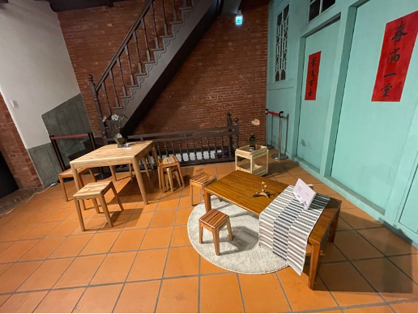
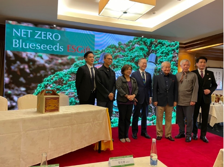
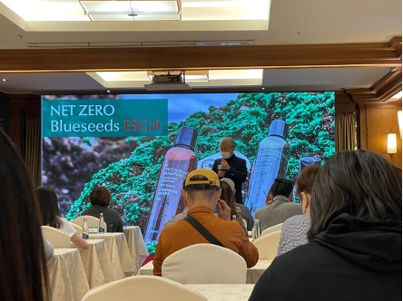

Embracing ESG for a Greener Future
Environmental, Social, and Governance (ESG) criteria are now at the forefront of how organizations strategize and manage their operations. ESG isn't just a buzzword—it's a powerful framework that helps companies navigate risks, seize opportunities, and drive sustainable growth. Research shows that implementing ESG can significantly boost firm value and enhance decision-making processes (Aydoğmuş et al., 2022; Pozzoli et al., 2022).
Meanwhile, the United Nations' 17 Sustainable Development Goals (SDGs) set a global blueprint for a more sustainable future by 2030 (dpicampaigns, n.d.). Companies worldwide are increasingly integrating ESG with SDG principles, creating a multi-faceted approach to sustainability that touches on everything from environmental stewardship to social equity.
Tackling Sustainability in the Furniture Industry

The furniture industry is one of the sectors where ESG and SDG are being put into action. However, it’s not without its challenges. The industry’s reliance on wood raises concerns about sustainability, but recent regulations are helping companies adopt green manufacturing practices. This shift is leading to a growing demand for eco-friendly furniture (Ratnasingam, 2022).

Recently, a course titled "Trend Study and Product Planning" from NTUT, Taiwan brought the students to attend a discussion on ESG-SDG integration in Taiwan’s design industry. The session focused on transforming traditional business models into ESG-based frameworks, starting with the furniture industry. The goal? To achieve net-zero emissions while balancing production costs and market demands. The conversation highlighted the importance of creating trends that emphasize sustainability over mere aesthetics.
- Environmental Impact: Certified wood is now a must, with a commitment to plant more trees than are cut down. This aligns with SDG goals like "Responsible Consumption and Production" and "Climate Action."
- Social Impact: The green furniture movement in Taiwan is fostering a community dedicated to sustainability, supporting SDG goals like "Industry, Innovation, and Infrastructure" and "Partnerships for the Goals."
- Governance: Government collaboration is crucial for setting regulations that ensure the use of sustainable materials and for helping traditional businesses transition to green manufacturing.


Blueseeds: A Pioneer in Sustainable Daily Essentials
Another spotlight of the discussion was Blueseeds, a company making waves in the sustainable product space. Blueseeds specializes in eco-friendly daily essentials like essential oils, shampoos, and hydrosol sprays. Their commitment to sustainability is evident in every product, which is designed to minimize environmental impact—right down to reducing water usage in their soaps and body washes.
- Environmental Commitment: Blueseeds sources all materials from nature, ensuring they are as eco-friendly as possible. This supports SDG goals like "Good Health and Well-Being," "Responsible Consumption and Production," and "Life on Land."
- Social Responsibility: The company is also making strides in social sustainability by promoting "Quality Education," "Gender Equality," and "Reduced Inequalities." During the session, Blueseeds shared how they’ve involved students with disabilities in their educational programs, providing them with valuable skills and opportunities.
- Governance: Blueseeds works closely with the government to promote their green products and spread awareness about sustainable practices. Their efforts have earned them numerous awards for innovation and sustainability.
The Road Ahead
The takeaway from these sessions is clear: Taiwan’s businesses are increasingly adopting ESG-SDG frameworks to align with global sustainability trends. However, achieving a sustainable future by 2030 requires collective action and commitment. As more companies recognize the importance of sustainability, they will continue to drive change, creating a healthier, more sustainable world for all.
References
Aydoğmuş, M., Gülay, G., & Ergun, K. (2022). Impact Of Esg Performance On Firm Value And Profitability. Borsa Istanbul Review. https://doi.org/10.1016/j.bir.2022.11.006
dpicampaigns. (n.d.). Take Action for the Sustainable Development Goals. United Nations Sustainable Development. Retrieved November 22, 2022, from https://www.un.org/sustainabledevelopment/sustainable-development-goals/
Lai, X., & Zhang, F. (2022). Can ESG certification help company get out of over-indebtedness? Evidence from China. Pacific-Basin Finance Journal, 76, 101878. https://doi.org/10.1016/j.pacfin.2022.101878
Pozzoli, M., Pagani, A., & Paolone, F. (2022). The impact of audit committee characteristics on ESG performance in the European Union member states: Empirical evidence before and during the COVID-19 pandemic. Journal of Cleaner Production, 371, 133411. https://doi.org/10.1016/j.jclepro.2022.133411
Ratnasingam, J. (2022). Standardization and Environmental Compliance. In J. Ratnasingam (Ed.), Furniture Manufacturing: A Production Engineering Approach (pp. 125–135). Springer. https://doi.org/10.1007/978-981-16-9412-7_11